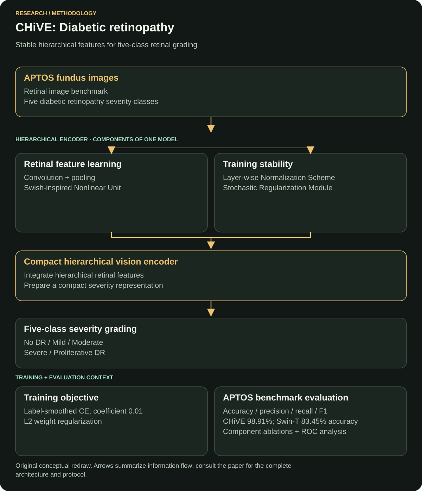

Medical imaging · Retinal classification
Hierarchical deep learning with stability-driven normalization and regularization for accurate multi-class diabetic retinopathy diagnosis
CHiVE (Compact Hierarchical Vision Encoder) grades five diabetic retinopathy classes from retinal images. It combines hierarchical feature learning with normalization and regularization to address training instability, class imbalance and visually similar disease stages.
Case study updated
Read the original paperProblem
Five-class retinal grading must distinguish visually similar disease stages despite class imbalance and overfitting. The publisher's abstract identifies those challenges as the starting point.
Why important
Diabetic retinopathy can cause permanent vision loss, making early recognition an important screening goal. The difficult modeling task is to distinguish disease stages that share subtle retinal features while learning from imbalanced examples. The paper frames these as practical challenges for retinal-image analysis.
A useful grading model needs sensitivity to those small visual differences and stable learning across the severity classes. This connects the architectural choices directly to the task: preserve retinal detail, reduce overfitting and examine errors by class.
Dataset
The study uses APTOS for five-class retinal classification. Source: publisher abstract. The official competition data page provides dataset access.
Protocol details requiring the full methods: selected image counts, per-class partitions, input resolution, augmentation and patient-level split rules.
Method / model
CHiVE (Compact Hierarchical Vision Encoder) combines convolutional features, training-stability normalization, structural-risk regularization and pooling for retinal detail. Source: published method summary.
Ablation experiments examined the Swish-inspired Nonlinear Unit, Layer-wise Normalization Scheme and Stochastic Regularization Module. Source: author-supplied experimental clarification.


Why that model
My interpretation of the CHiVE design: convolutional feature learning addresses local retinal patterns, while the hierarchy combines visual evidence for severity grading. Normalization targets training stability; regularization targets generalization; pooling contributes the detail used to separate nearby grades.
The Swish-inspired Nonlinear Unit, Layer-wise Normalization Scheme and Stochastic Regularization Module make nonlinear feature learning, normalization and regularization explicit parts of the design. The ablations examine these components alongside the complete encoder; individual ablation scores are outside the supplied experimental clarification.
Loss function
CHiVE trains with label-smoothed cross-entropy plus L2 regularization. The label-smoothing coefficient is 0.01. Source: author-supplied implementation clarification.
L = CEsmoothed + λ ‖W‖22
The L2 coefficient λ was not supplied. The objective above leaves that value symbolic and does not assume a particular distribution for smoothing the class targets.
Evaluation metrics
The paper reports accuracy, precision, recall, F1, ROC analysis, confusion matrices and an ablation study. Source: publisher evaluation summary.
- Precision and recall
- Precision asks how often a predicted class is correct; recall asks how much of that true class is recovered.
- Micro and macro averaging
- Micro averaging pools class counts. Macro averaging treats each class equally, making it useful when class frequencies differ.
- F1
- The harmonic mean of precision and recall provides a combined summary, but the two underlying measures still matter.
Definitions: classification-metrics reference.
Baseline
The experimental baselines are VGG16-BN, ResNet-50, DenseNet-121, EfficientNet-B0 and Swin-T. The strongest direct accuracy baseline is Swin-T at 83.45%. Source: author-supplied experimental clarification.
| Model | Accuracy |
|---|---|
| Swin-T · strongest direct baseline | 83.45% |
| CHiVE · proposed model | 98.91% |
Individual scores for the other baselines and the fine-tuning settings were not included in this clarification.
Results
- CHiVE · APTOS accuracy
- 98.91%
- Micro precision / recall / F1
- 98.91%
- Macro-averaged measures
- >97.8%
- Class-wise AUC
- 0.99–1.00
The publisher reports these APTOS evaluation results. The author-supplied direct comparison places CHiVE 15.46 percentage points above Swin-T in accuracy (98.91% − 83.45%). The macro averages complement the overall score by treating the severity classes equally.
My exact contribution
I worked on implementation and experiments as a co-author.
Limitations
Single-dataset evaluation: the study reports results on APTOS. The publisher identifies this scope explicitly. Generalization to other image sources and clinical populations therefore remains an open question.
External evaluation should examine image quality, acquisition differences, calibration and which severity classes are confused. Prospective clinical use would also require expert review and evidence from the intended screening workflow.
The protocol details listed above are needed to audit partitioning and reproduce the experiment. Reported accuracy alone cannot resolve those questions.
What I would improve now
Proposed extensions:
- Publish a reproducibility manifest: document selected files, preprocessing, the complete loss configuration including the L2 coefficient, model settings, seeds and the partitioning procedure.
- Test beyond the development source: evaluate a separately sourced, appropriately authorized cohort and report results by severity and image quality.
- Audit partitions: use patient or acquisition identifiers where available to prevent related samples crossing evaluation boundaries.
- Make uncertainty visible: evaluate calibration, class-wise confidence intervals and a review or abstention policy for uncertain images.
- Measure the complete pipeline: document preprocessing time, inference cost and the evidence an expert needs to review an output.
Publication and primary sources
Ain Shams Engineering Journal, 17(12), 2026, Article 104453.
- Original publication and DOI: 10.1016/j.asej.2026.104453
- Publisher abstract, reported metrics and author list
- Official APTOS data page
- Classification-metric definitions
Source coverage combines the publisher's abstract and metrics with the author's implementation and experimental clarification. Dataset partitions, remaining baseline scores and the full ablation table still require the complete protocol.
← All research publications · Discuss research or AI engineering